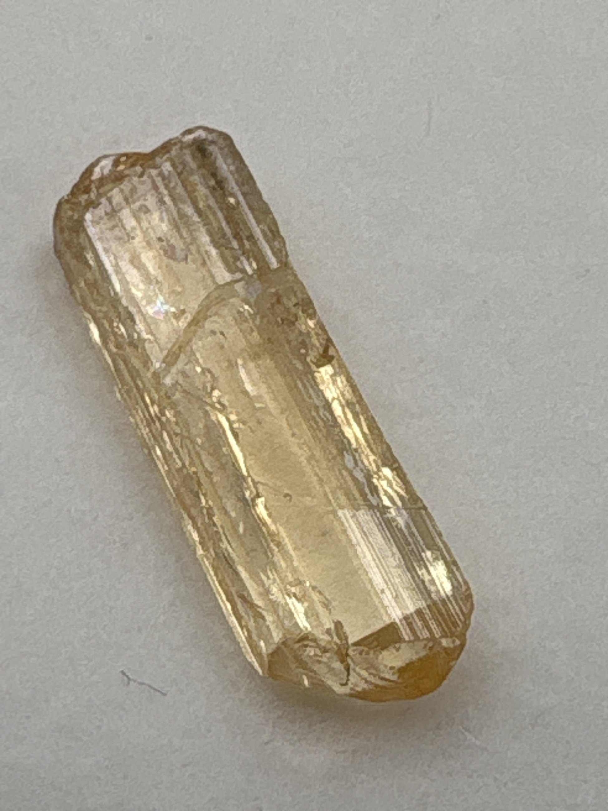

The Gem Drawer › No. 36

A single uncut golden-champagne prismatic crystal.
| Catalogue no. | #36 |
|---|---|
| As labeled | Imperial Topaz (RAW/ROUGH single crystal - see notes) |
| Shape / cut | Raw/uncut natural crystal form (elongated prismatic, not faceted) |
| Weight | Not recorded |
| Measurements | Not recorded |
| Colour | Golden / champagne |
| Clarity / condition | Not recorded |
Interested in this stone, or in the collection as a whole? Terry VanWormer can answer questions about it.
Click here to inquireor email Terry directly at maxrebo34@gmail.com